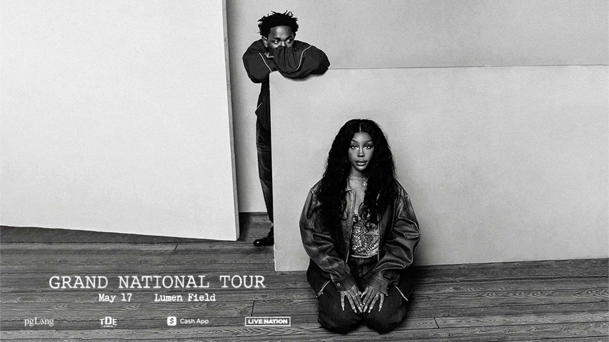

Kendrick Lamar & SZA - Grand National Tour (2025)

- Launched on April 10, 2025, in Minneapolis, the Grand National Tour spans 45 stadium shows across North America, Europe, and wrapping in December in Sydney.
- Why This Tour Matters: Rather than merely a tour, Kendrick and SZA are innovating the concert experience to make it a cultural phenomenon.
Tour Overview
The Grand National Tour is expected to break streaming records with 11 million tickets sold and is anticipated to be a transformative experience for fans and artists alike.
Why Fans Are Excited
- Kendrick's storytelling prowess, drawing from his iconic albums, and SZA's ethereal sound are creating an electrifying synergy.
- Their collaboration promises a unique blend of hip-hop and R&B that has fans eagerly awaiting the live experience.
Cultural Significance
This tour represents a new model of dual headlining—powerhouse artists sharing the stage, redefining what it means to spotlight music's cultural impact.